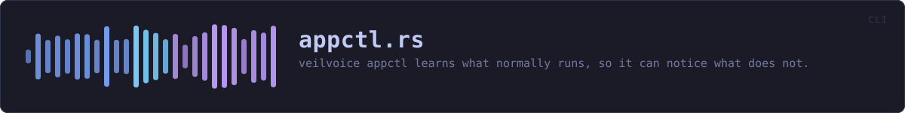

crates/veilvoice-cli/src/appctl.rs
veilvoice-cli · 286 lines · read the source here · or on GitHub
veilvoice appctl — learn what normally runs, then notice what does not.
Every subcommand prints the scope note. Not once at setup, not behind a flag: every time, because the one thing a reader must not come away believing is that this stopped something. It did not and it cannot, and a warning shown once is a warning forgotten by the second week.
In plain words
Run learn for a while and VeilVoice writes down which programs you normally use. Run check afterwards and it tells you about anything running that was not on that list.
It does not block anything. It is a way of noticing.
WHAT THIS FILE CONTAINS
286 lines defining 10 functions (6 public), 0 types and 0 constants. Everything below is read out of the source, so it cannot disagree with the code.
What happens when it runs. These are the ways in: public, and nothing else in this file calls them, so they are what an outside caller reaches first.
learnline 81 — Record what is running as ordinary.
reachesbaseline_path,load,running,save,scopecheckline 134 — Compare what is running against the baseline.
reachesbaseline_path,load,running,save,scopeallowline 209 — Allow a program, for a while or for good.
reachesbaseline_path,load,save,scoperevokeline 242 — Withdraw a grant.
reachesbaseline_path,load,save,scopelogline 254 — Show the decision log.
reachesbaseline_path,load,scope
WHAT CALLS WHAT
The functions this file defines, and the calls between them. An edge means the callee's name appears, called, inside the caller's body — a syntactic reading, not a type-resolved one.
The same graph as Mermaid source
%%{init: {"theme":"base","themeVariables":{"background":"#1a1b26","primaryColor":"#1f2335","primaryTextColor":"#c0caf5","primaryBorderColor":"#7aa2f7","secondaryColor":"#16161e","tertiaryColor":"#16161e","lineColor":"#737aa2","textColor":"#c0caf5","mainBkg":"#1f2335","nodeBorder":"#7aa2f7","clusterBkg":"#16161e","clusterBorder":"#2f3549","fontFamily":"ui-monospace, SFMono-Regular, Consolas, monospace","fontSize":"14px"}}}%%
flowchart TD
n_baseline_path["baseline_path<br/>line 23"]
n_load["load<br/>line 37"]
n_save["save<br/>line 45"]
n_scope["scope<br/>line 67"]
n_running["running<br/>line 76"]
n_learn(["learn<br/>line 81"])
n_check(["check<br/>line 134"])
n_allow(["allow<br/>line 209"])
n_revoke(["revoke<br/>line 242"])
n_log(["log<br/>line 254"])
n_allow --> n_baseline_path
n_allow --> n_load
n_allow --> n_save
n_allow --> n_scope
n_check --> n_baseline_path
n_check --> n_load
n_check --> n_running
n_check --> n_save
n_check --> n_scope
n_learn --> n_baseline_path
n_learn --> n_load
n_learn --> n_running
n_learn --> n_save
n_learn --> n_scope
n_log --> n_baseline_path
n_log --> n_load
n_log --> n_scope
n_revoke --> n_baseline_path
n_revoke --> n_load
n_revoke --> n_save
n_revoke --> n_scope
click n_baseline_path href "https://github.com/tilas01/veilvoice/blob/main/crates/veilvoice-cli/src/appctl.rs#L23" "open the source"
click n_load href "https://github.com/tilas01/veilvoice/blob/main/crates/veilvoice-cli/src/appctl.rs#L37" "open the source"
click n_save href "https://github.com/tilas01/veilvoice/blob/main/crates/veilvoice-cli/src/appctl.rs#L45" "open the source"
click n_scope href "https://github.com/tilas01/veilvoice/blob/main/crates/veilvoice-cli/src/appctl.rs#L67" "open the source"
click n_running href "https://github.com/tilas01/veilvoice/blob/main/crates/veilvoice-cli/src/appctl.rs#L76" "open the source"
click n_learn href "https://github.com/tilas01/veilvoice/blob/main/crates/veilvoice-cli/src/appctl.rs#L81" "open the source"
click n_check href "https://github.com/tilas01/veilvoice/blob/main/crates/veilvoice-cli/src/appctl.rs#L134" "open the source"
click n_allow href "https://github.com/tilas01/veilvoice/blob/main/crates/veilvoice-cli/src/appctl.rs#L209" "open the source"
click n_revoke href "https://github.com/tilas01/veilvoice/blob/main/crates/veilvoice-cli/src/appctl.rs#L242" "open the source"
click n_log href "https://github.com/tilas01/veilvoice/blob/main/crates/veilvoice-cli/src/appctl.rs#L254" "open the source"
classDef entry fill:#1f2335,stroke:#7aa2f7,color:#c0caf5
class n_learn,n_check,n_allow,n_revoke,n_log entry
classDef api fill:#1f2335,stroke:#7dcfff,color:#c0caf5
class n_baseline_path api
classDef helper fill:#1f2335,stroke:#bb9af7,color:#c0caf5
class n_load,n_save,n_scope,n_running helperThis site loads no third-party script, so it cannot run Mermaid; the diagram above is the same nodes and edges drawn by the generator instead. GitHub renders the source below directly.
ITEMS
| Item | Line | Documentation |
|---|---|---|
baseline_path pub fn | 23 | Where the baseline is kept. |
load fn | 37 | |
save fn | 45 | |
scope fn | 67 | The note that goes with every answer. |
running fn | 76 | What is running now, through the shared listing. |
learn pub fn | 81 | Record what is running as ordinary. |
check pub fn | 134 | Compare what is running against the baseline. |
allow pub fn | 209 | Allow a program, for a while or for good. |
revoke pub fn | 242 | Withdraw a grant. |
log pub fn | 254 | Show the decision log. |